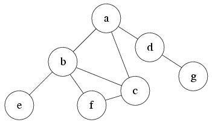
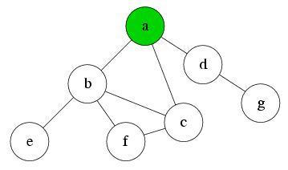
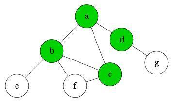

What is breadth-first search?
As we previously mentioned, breadth-first search (BFS) is a search algorithm for traversing tree or graph data structures. It starts at the tree root and explores all neighbor nodes first, before moving on to the neighbors of the neighbors, and so on. BFS uses a queue data structure to store the node it needs to explore. A queue is like a line at the grocery store, first person in the line is the first person out.
Now let’s have an example to see how BFS actually works.
Below is the graph we will traverse. We also have a queue Q to record the nodes we’ll be exploring. Suppose the source node is node a.

Q:
At first, only the node a is reachable. So we add it into Q.

Q: a
After exploring a node, we do two things; we add every node that it is connected to the end of the queue, pop or remove the node we’ve just explored from the queue, and then explore the next node in the queue. Because we remove nodes from the front of the line, and add nodes to the end of the line, this algorithm ends up exploring level wise before moving on to the next level.
We explore node a. We find that there are three nodes b, c and d reachable from where we are. We push them all into Q, and then we remove ‘a’ from the from of the queue. We then continue on to the next node in the queue.

Q: b, c, d
We explore node ‘b,’ and find that nodes ‘e’ and ‘f’ are reachable now. Because ‘c’ is already in our queue, we do not add it again. We add ‘e’ and ‘f’ to the end of the queue, and then remove ‘b’ from the front. We then explore the next node in the queue ‘c.’

Q: c, d, e, f
We explore node c. Since nothing new is reachable now, push nothing into Q, and pop ‘c’ from it. Explore the first node in the queue, ‘d’.
Q: d, e, f
Explore node d. Node g is reachable now, so push it into Q. Pop d from the front of the queue. Explore the next node in the queue, e.

Q: e, f, g
Because e, f, and g contain no connections to new edges, there will be nothing to push into Q at those nodes. The same steps as above result in no pushes into Q, and three pops from the front of Q, in the order or e, f, and then g.
Q:
When our Q is empty, the algorithm has visited every node in the graph, and finished.